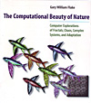

Weeds
- XLogo
The following programs draw a series of weed / tree / leaf like structures. They all start at the bottom of the drawing area and each uses an axiom of just 'Rule'.
At each new depth, the Once the DrawList has |
|
To New
# set default screen, pen and turtle values
ResetAll SetScreenSize [400 400] HideTurtle
SetSC Black SetPC Green SetPS 1 PenUp
End
To Init
Make "Length 200 Make
"Delta 0.65 Make "Angle 20
Make "Rule [ d s n n rule r s p rule r n rule ]
End
To Display :Depth
# write header title, curve depth and info
SetPC White
SetPos [-190 184] Label "L-Curve
SetPos [-190 -192] Label List "Rule: :Rule
SetPos [130 184] Label List "Delta: :Delta
SetPos [130 170] Label List "Angle: :Angle
SetPos [130 156] Label List "Depth: :Depth
End
To Generate :DrawList :Rule :Dep
Make "NewList [ ]
Repeat (Count :DrawList) [
Make "ThisItem Item RepCount :DrawList
If :ThisItem = "rule [
Repeat (Count :Rule) [
Make "ThisItem2 Item RepCount :Rule
Make "NewList LPut :ThisItem2 :NewList
If :ThisItem2 = "d [ Make "NewList LPut :Dep :NewList ] ] ]
[ Make "NewList LPut :ThisItem :NewList ] ]
Output :NewList
End
To d :Dep
#SetPW :Depth - :Dep
Make "Green Round 255/ (:Depth-:Dep ) # green depends on length
SetPC ( List 255 :Green 0 ) # red set to 255 and blue to 0
Forward :Length * Power :Delta :Dep SetPos Pos
End
To p
Right :Angle SetH Heading
End
To n
Left :Angle SetH Heading
End
To s
Make "Positions Lput List Position Heading :Positions
End
To r
Make "myPos Last :Positions
PenUp SetPos First :myPos
SetH Last :myPos PenDown
Make "Positions ButLast :Positions
End
To Rule
SetPC Red Forward 1 # 4 for fixed length weeds
End
To Go :De
Make "Depth :De
New Init Display :Depth
Make "Positions [ ]
Make "DrawList [rule]
Repeat :Depth-1 [ Make "DrawList Generate :DrawList :Rule RepCount]
#SetPC Orange SetPW :Depth-1 Dot Pos
SetPos [0 -170]
PenDown Run :DrawList
End
Type go + level for example Go 5 to run.
Replace Init procedure for different rules.
To Init
Make "Length 100 Make
"Delta 0.65 Make "Angle 25
Make "Rule [ d s p rule r d s n rule r p rule ]
End
To Init
Make "Length 220 Make
"Delta 0.65 Make "Angle 90
Make "Rule [ d s p rule r s n rule r ]
End
To Init
Make "Length 200 Make
"Delta 0.65 Make "Angle 45
Make "Rule [ d s p rule r s n rule r ]
End
To Init
Make "Length 200 Make
"Delta 0.65 Make "Angle 25
Make "Rule [ d s p rule r s n rule r ]
End
To Init
Make "Length 200 Make
"Delta 0.45 Make "Angle 25
Make "Rule [ d s n rule r d s p rule r rule ]
End
To Init
Make "Length 140 Make
"Delta 0.45 Make "Angle 20
Make "Rule [ d s n n n rule r s p p p rule r d s n n rule r s p p rule r d rule ]
End
For this fixed length weed, also change the rule procedure to 'Forward 4'.
To Init
Make "Length 0 Make "Delta 0 Make "Angle 25
Make "Rule [ rule s n rule r rule s p rule r rule ]
End
- Animation
- Art
- Cellular Auto
- Coding
- Demo
- Dot Plot
- Fractal
- Grid
- Illusion
- L-System
- Multi Turtle
- One Line
- Perspective
- Plane Filling
- Polar
- Puzzle
- Recursion
- Sound
- Spiral
- Spirograph
- Trees
- Walks


Weed L-Curve
Book Info

Pages 72-92
Procedures blue
Variables pink
Comments green
Library gray

Visit XLogo
web site